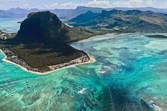
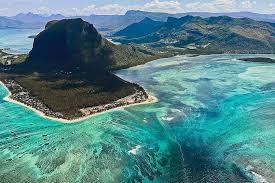

हिंद महासागर में छोटा सा हिंदुस्तान
 

मॉरीशस अफ्रीकी महाद्वीप के पूर्व में हिंद महासागर में स्थित एक खूबसूरत द्वीप राष्ट्र है। यह अपने आश्चर्यजनक समुद्र तटों, हरे-भरे परिदृश्य और विविध वन्य जीवन के लिए जाना जाता है। राजधानी पोर्ट लुइस है, जहाँ आप बाज़ार, संग्रहालय और रंगीन इमारतें देख सकते हैं।
मॉरीशस का इतिहास समृद्ध है। इसकी खोज 16वीं शताब्दी में पुर्तगालियों ने की थी और बाद में डच, फ्रांसीसी और ब्रिटिशों ने इसे अपना उपनिवेश बना लिया। संस्कृतियों के इस मिश्रण ने इसकी भाषा, भोजन और परंपराओं को प्रभावित किया है। आधिकारिक भाषा अंग्रेजी है, लेकिन कई लोग फ्रेंच और मॉरीशस क्रियोल भी बोलते हैं।
यह द्वीप अपनी अनोखी वनस्पतियों और जीवों के लिए प्रसिद्ध है। आप विशाल कछुआ, पक्षियों की विभिन्न प्रजातियाँ और सुंदर मूंगा चट्टानें देख सकते हैं। सबसे प्रसिद्ध पौधों में से एक स्थानिक बूबी पेड़ है, जिसका आकार असामान्य है और यह जंगली में उगता है।
मॉरीशस की जलवायु उष्णकटिबंधीय है, जिसका अर्थ है कि वर्ष के अधिकांश समय गर्म और धूप रहती है। यात्रा के लिए सबसे अच्छा समय मई से दिसंबर तक है जब मौसम ठंडा और कम आर्द्र होता है।
पर्यटन मॉरीशस की अर्थव्यवस्था का एक महत्वपूर्ण हिस्सा है, पर्यटक समुद्र तटों, जल खेलों और राष्ट्रीय उद्यानों में लंबी पैदल यात्रा का आनंद लेने के लिए आते हैं। यह द्वीप अपने स्वादिष्ट व्यंजनों के लिए भी जाना जाता है, जिसमें भारतीय, अफ़्रीकी, फ़्रेंच और चीनी स्वादों का मिश्रण होता है।
कुल मिलाकर, मॉरीशस प्राकृतिक सुंदरता और सांस्कृतिक विविधता से भरा एक जीवंत और स्वागत योग्य स्थान है, जो इसे यात्रियों के लिए एक अद्भुत गंतव्य और सीखने के लिए एक आकर्षक जगह बनाता है